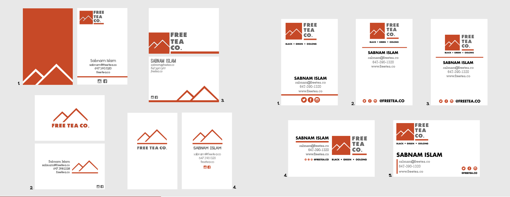
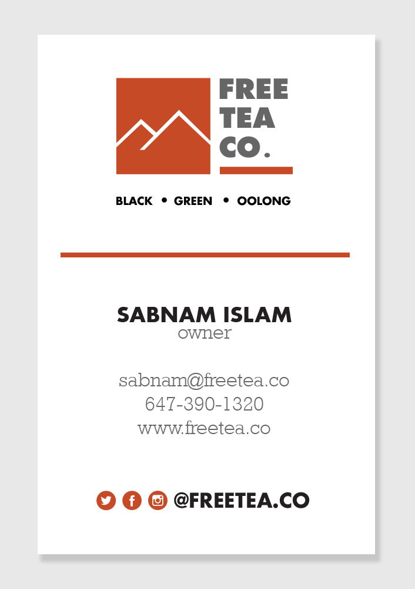
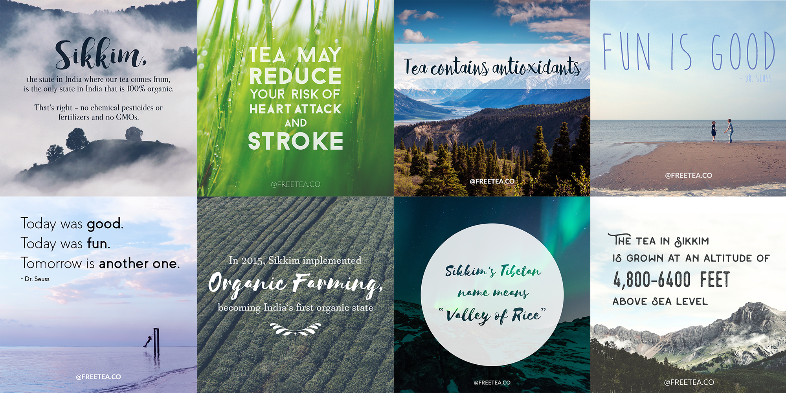
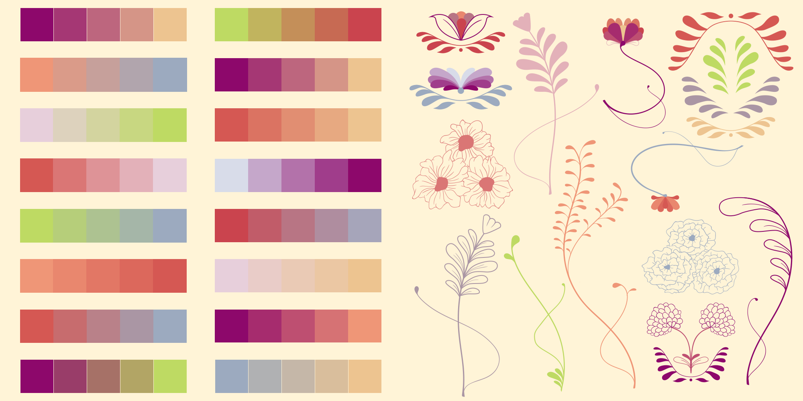

Free Tea Co.
Business Card Design


Created a business card for the company using existing logo. Created multiple designs, and once they picked their favourite design, iterated and refined the final design from there.
Social Media Posts


Using quotes given, I was tasked to create a number of images inteded for posting on social media to educate and inspire the company's followers. I experimented with typography, colour, and design in order to create variation within the images while still trying to keep a cohesive aesthetic. As well, I created a sample set of vector illustrations to be used in these and future instagram images.